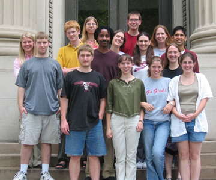

Monica Brucker (University of Pittsburgh) worked under the direction of Prof. Rudnick, exploring the possibility of a search for radio-loud but optically faint supernovae by comparing two radio catalogs (FIRST and NVSS) for sources showing significant decrease in flux, and looking for optical counterparts in the Digitized Sky Survey.
Abigail Clarke (Earlham College) worked under the direction of Prof. Goldman, investigating whether the number of charge carriers in thin films of copper or indium tin oxyde grown at low temperatures on a strontium titanate substrate could be affected by the application of a voltage between the thin film and a platinum gate on the back of the substrate.
Deveron Crawford (Florida A & M University) worked under the direction of Prof. Goldman, investigating the electronic properties of gold nanoclusters using Scanning Tunneling Microscopy and Spectroscopy techniques, with the aim of determining the crossover between mesoscopic and quantum physics when the cluster size varies.
Joe Dunsmore (U. of MN, TC) worked under the direction of Prof. Halley and Prof. Giese, building an optical (laser) source to heat liquid helium, this to provide a source of helium atoms to be scattered by a thin film of superfluid Helium as a means of investigating the properties of the Bose condensate.
Kurt Hafer (Cal Poly - San Luis Obispo) worked under the direction of Prof. Marshak, using data from the Soudan 2 underground particle detector to identify the lunar shadow from the flux of cosmic-ray muons reaching the detector, thereby confirming the alignment and angular resolution of the detector.
Jacob Haqq-Misra (U. of MN, TC) worked with Professor Hanany, running computer simulations of a superconducting magnetic system meant to improve the efficiency of the MAXIPOL system, a balloon-borne experiment that measures both the temperature and polarization of the Cosmic Microwave Background (CMB).
Ellynne Kutschera (University of Wisconsin – Stevens Point) worked under the direction of Prof. Huang, measuring the temperature variation of the surface tension of liquid crystal thin films near structural phase transitions.
Benjamin Peterson (U. of MN – Morris) worked with Prof. Broadhurst on the response of the brain to acoustic stimuli, through a study of magnetic activity in the auditory cortex by means of a two-coil gradiometer.
Angela Pooler (Southwestern College) worked with Prof. Dahlberg, using Atomic as well as Magnetic Force Spectroscopy to study the magnetic domain structure of cobalt nanowires produced by the electrodeposition process.
Christina Prested (Carnegie Mellon University) worked with Prof. Hanany, exploring whether a possible background due to polarized microwave emission by atmospheric oxygen could affect the measurement of CMB by MAXIPOL.
Erica Raber (Miami University of Ohio) worked with Prof. Cushman, studying radon contamination of components of the Cryogenic Dark Matter Search (CDMS) through measurements of alpha particle emission rates.
Elizabeth Smith (Alma College) worked with Prof. Muller, studying the effects of photobleaching and saturation in Fluorescence Correlation Spectroscopy, a technique used to study fluorescently labeled macromolecules of biophysical interest.
Julie Smith (University of Northern Colorado) worked with Prof. DuVernois in the building and testing of a novel cosmic-ray detector using drift tubes filled with a Hexane/Carbon Dioxide gas mixture.
Chelsea Tiffany (Wellesley College) worked with Prof. Cattell on the mapping of dayside auroral phenomena, translating satellite data into information on the plasma physics and the possible causes of these phenomena.
Ben Zwickl (Purdue University) worked with Prof. Williams on whether the relatively weak effects of gravitational lensing could lead to observable variations in the brightness of quasars.